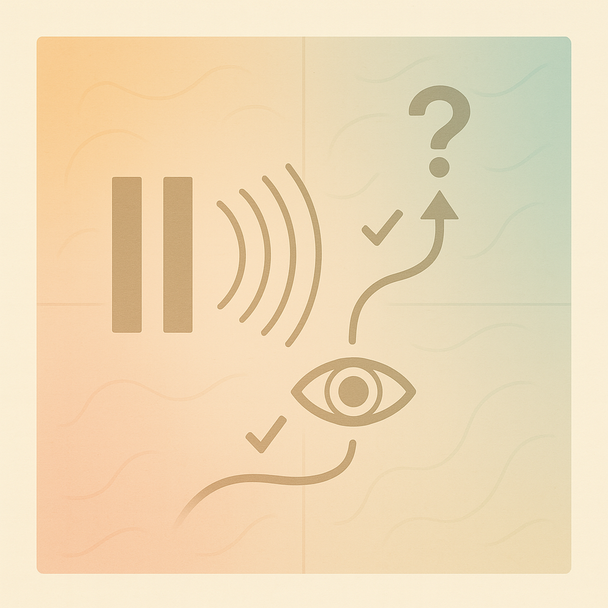

快速链接

双缝干涉实验随想
2025年8月02日
恶趣味
从小厌学，课本枯燥。但也偏爱钻研，总捣鼓些古怪的发现。记得上初二那年，大概在看《科学》课本上五碳循环之类的一些知识，我不感兴趣。我跟我们的班长，除了“政见”不同，恶趣味倒也相投。那年，我的生日礼物是一只派克钢笔，本应是硬笔书法课的学习工具。笔头有一个银色金属的笔帽。灯光下，银色笔帽，会将灯光反射回来。偶然一次，我用眼睛渐渐靠近反射的灯光。由小及大，最终反射出很多细胞状，整齐排列的结构。我猜想是眼睛内部的投影。次日，告诉班长。两人相约去找《科学》老师。当然，不了了之。因为五碳循环的奥秘似乎远大于笔帽。当时也读不懂，成人世界里的敷衍了事。

现在，我们的班长，从业导演，算是始终如一。我也会有时候钻研些古怪的发现，也算始终如一。《科学》老师，应该也还在杭外教课。所以，大家也都始终如一。
粒子
吃了东西，饱腹感，会让人本能地感受到物质的存在。任何物质，就似乎会从牛顿三大定律里，延展开来：质量和形状，成为定义一个物质的直观标准。后来，化学教会了分子。各种不同颜色的小球，被一些黑色塑料熔成的分子键，连接起来。分子，似乎从小印象里，就有质量和形状。只要有足够强的放大镜，我就能看到水里的分子。再后来，书上说，任何物质，都可以被看成由分子组成，分子里也还有更小的粒子。最为奇妙的是，粒子们还会混乱运动。当时，年少无知，我不解的是，“为什么我手放在书桌上，并不能感到书桌的粒子在碰撞我的粒子？”。

再后来，才意识到，“粒子”其实是人类对于，观测到的一个规律现象的，代名词。比如电子：其实我们并无法（也不需要）直接观测到它。通过云室（可以想象成一个密闭空间里放满一些显踪的物质），当电子穿过云室的时候，我们就能看到它留下的轨迹。电子的质量和形状，也是如此。我们并不会把电子放在一个微型秤杆上，进行测量；或者通过画面，看到电子的外表。对于质量的测算，是电子和另外一个已被定义的粒子之间相互作用后产生的运动轨迹中，推算出来的一个数值。从而，一步步，电子会被定义一些公式，一些常数。某种意义上，电子，其实就是一个抽象的概念。恰巧，这个抽象的概念，复合目前物理世界的假设；更重要的是，这个抽象概念，提供一个阶梯，方便物理学家理解下一个概念。不难想象，其实粒子可能会有无限多的分类。就像我们可以对一个抽象概念，继续进行分解。如果我们发现现存电子规律里的漏洞，我们也就需要更多的规律总结，去拓展对于粒子的定义来解释漏洞。
从宏观物质到微观，物质都是，观测者对于规律的抽象并有意义的总结；并更新迭代，循序渐进。

个体
对于宏观世界里，物质和个体的定义，其实也是对于规律的总结。只不过，宏观世界里，物质具有人类本能能够感知的质量和形状，规律的总结变得乏善可陈。比如，宏观世界里，石头和包子：石头掷地有声，我们并不需要总结规律，就像一个独热编码（one-hot encoding），每一个宏观物质，对于我们的认知，更像是一种记忆。当然，每个被编码的物质，有自己的性状。这些性状，也会被总结成规律，用来理解物质和物质在宏观世界里的相互作用。一个生命体，也是一个编码的物质。它有很多性状。反之，符合这些性状的物质，也就成为了生命体。
同样的，你接触到的水杯，书桌，键盘，本质上是一些被你用你的感官能够感知到一些被总结完的物质。当然，这些物质，再经过加工后，也便具有了意义（semantics）。当然，这些工具的命名法，通常是根据物质的意义，而非物质规律本身。
在宏观物质的世界里，观测者，同样会总结物质和物质的相互作用，变成物理定律；并更新迭代，循序渐进。宏观世界里，物质会被打上意义的标签，从而建立认知体系和社会。
二象性
石头砸向水面，形成波纹。波纹与波纹之间，相互会干涉，形成不同的涟漪。对于粒子，也存在波粒二象性，导致粒子和粒子之间会形成干涉。粒子于是具有二象性，可以被观测成，一个具有粒子规律的抽象概念，也可以被观测成，一个具有波性质的抽象概念。当然，说不定还有其他观测方式，总结出不同的抽象概念。无从知晓。

双缝干涉实验
双缝干涉实验最经典的形式是用一束光（经过一定处理后的光子，电子、原子等粒子束）射向一块不透明的挡板，挡板上仅开有两条彼此平行且非常狭窄的缝隙。当光束通过这两条缝时，每条缝可看作新的波源，两个波源发出的波在其后的屏幕上相遇并叠加，结果形成一系列明暗相间的干涉条纹。这些条纹的位置与缝间距离，缝到屏幕的距离以及入射波长密切相关，用简单的几何关系即可预测，证实了光（或粒子）在此情形下呈现明显的波动性质。
波的特性
如果我们每次只射向这块不透明的挡板，单个粒子；干涉还会发生吗？如果按照单个粒子形成一个波的宏观理解，应该无法形成干涉。但让电子一个一个地通过双缝，最初在屏幕上只会看到零散的撞击点。随着时间推移，这些点依旧逐渐累积成与光学实验相同的干涉条纹。
这个结果倒也可以用语言表述：粒子虽然单个通过，但是粒子具有的波的性质。导致粒子在穿越狭窄的缝隙（或者任意空间里）的过程中，涟漪依然存在。下一个粒子会对上个粒子通过形成的波纹，形成干涉。到这里，其实通过简单的波理论和场理论都能宏观理解。当然，你也可以理解成，粒子始终是可以被描绘成一个波的函数。波的特性导致粒子并不会确定在此刻通过哪一个缝隙，而是随机分布。随机分布导致在长时间的单个粒子发射后，形成叠加效应。
薛定谔的猫
如果我们重复上面的单个粒子实验，但在双缝前的每一条缝口各放置一套路径探测装置，实时记录粒子究竟经过哪一条缝，那么屏幕上不再出现明暗相间的干涉条纹。反常识的就是：干涉图样是否出现，并不单纯取决于粒子本身，而取决于是否存在观测者。如果你观测了，粒子具有的波的特性（不确定性）就会消失。
反观宏观世界，如果不具有有被观测者，粒子本身是不确定形式的波，在空间里浮动，在时间轴上展开。但这时，粒子也并无法被具像化。一旦进行观测，粒子的波的性质坍缩，从而丢失波的形式，变成被抽象化的物理公式。可以理解成，我们能够测量和观测到的，就一定是坍缩后的结果。换言之，如果存在我们无法观测的粒子，他们就一直保持波的特性。
因果“倒置”
以上的结果，之后又被延迟选择实验重复。简单来说，你可以把单个粒子通过后形成的干涉与否的结果存下来。类似于，你并不知道干涉与否，但你知道事件已经发生。这个时候，你再去读区已经收集起来的粒子通过路径，你依旧可以改变你的观测结果。
思想实验：假设你把干涉结果存下来，拷贝上传到月球上，让宇航员替你保管。然后你在地球上读取观测结果。如果你不读取，宇航员就看到干涉条纹。如果你读取，干涉条纹就消失了。你用当前读取的结果，影响了在已经发生的观测结果。
实际上，这也还是坍缩的结果。其实你存下来的观测结果本身也是以波的形式存在，或者以波的形式被观测的。观测结果本身存在不确定性（在被观测之前）。你现在观测行为，导致了观测结果的坍缩。但有意义的是，你的观测行为，似乎可以穿越时空，印象已经发生的结果。似乎你的观测行为，和已经发生的观测结果，可以量子纠缠。这种纠缠，显然是跨越时空的。
宿命论和坍缩方式
物理作为基础学科，按道理是具像化抽象概念的；让虚无缥缈的哲学理论，变成可以被总结，传颂的规律。但显然，双缝干涉实验的结果，结果本身都很难被具像化解释。但也似乎，在某种意义上，与形而上的思辨，如出一辙。个体由粒子组成，随着时间，在虚无中，个体或者所有物质是保持者波动性的。而波动性本身，意味着个体是在一个有限集中的多种概率分布。这很像宿命论的一种：个体的结果是已经确定的，但是人生就是观测和坍缩的过程。但宿命论的原本定义，我也觉得过于狭隘，否定了自主意识。
假设个体粒子的“干涉”已经形成（即命运），或者说，之所以我们现在能够观测本体，是因为粒子的干涉必然已经形成。未被观测的个体（即未来）更像是一个有限可能性的动态分布。这个有限可能性不是无限的，也不是单一的。人生每一次观测（或者说对于未来未知行为的决策）其实就是一次次小的坍缩。每次坍缩，会带你去新的动态分布，虽然动态分布本身已经预先确定。
当然如果观测就会导致未来的某一种观测结果坍缩，或者说因果的产生。那每次当下的观测就应当理性分析。在你的个体偏好下，要尽量去延迟坍缩，直到你的偏好被满足。
接纳
每次百般无聊，用民科的角度想这些恶趣味的问题，不乏自觉庸人自扰。但时间分配又有什么最正确的方式呢？也想每次想起这个问题，我每次都能自扰一下，也希望能得出不同的答案。某种意义上，未被观测的概率分布也已经确定，万一是个正态分布，又何必太认真呢？该发生的总会发生。